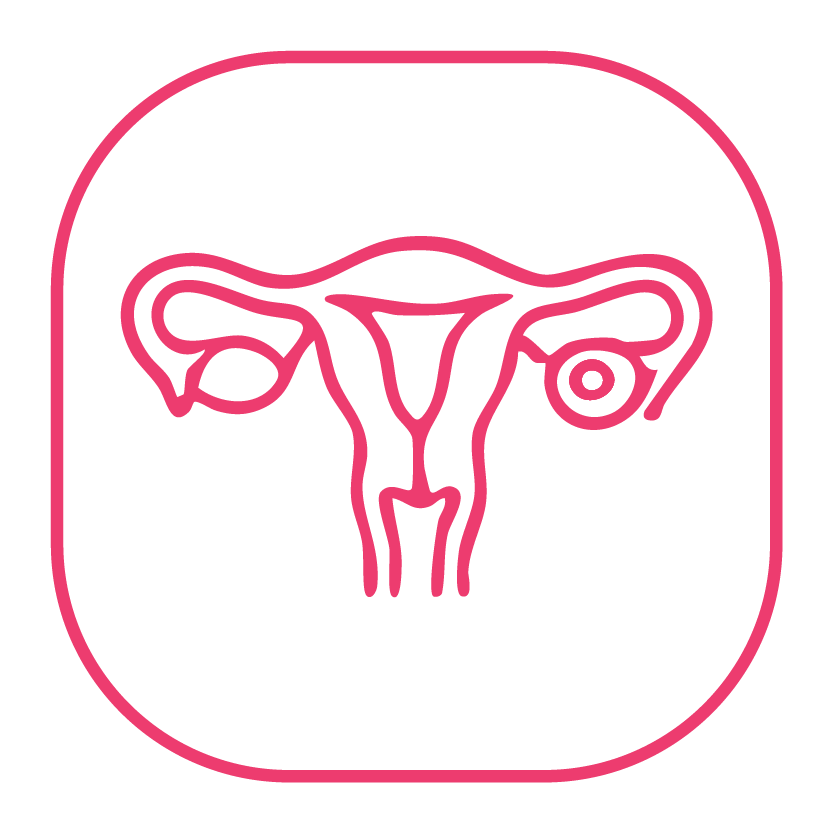
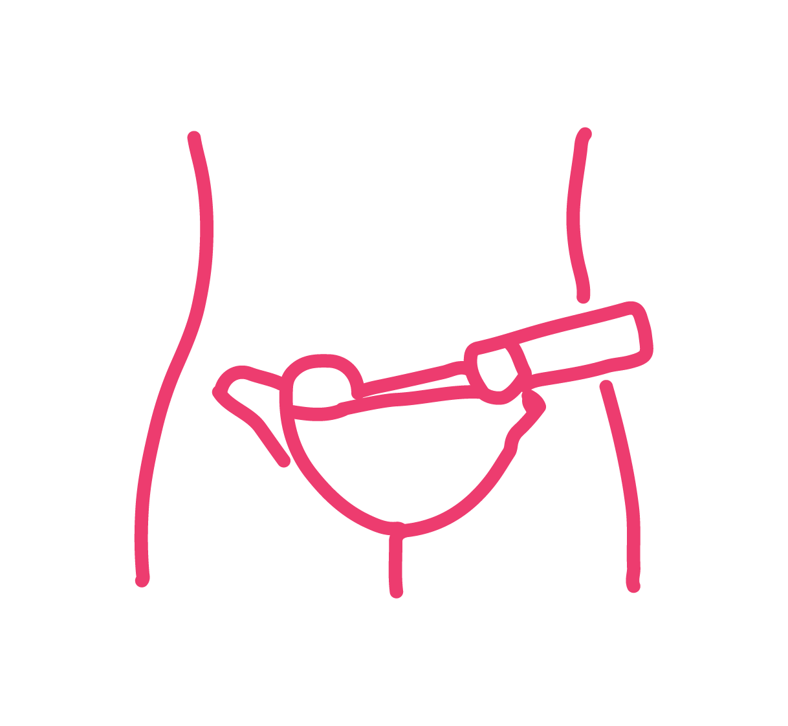
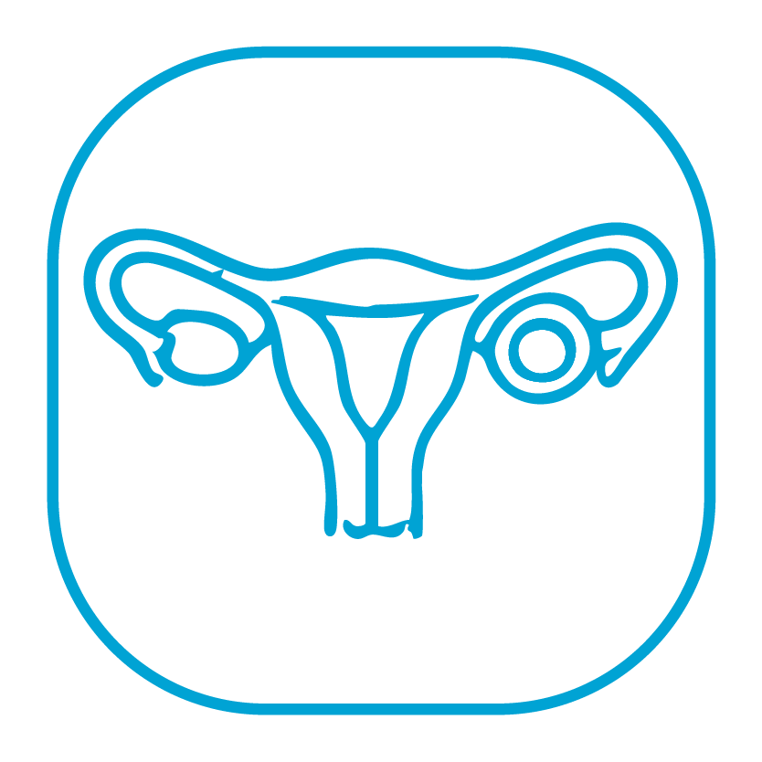
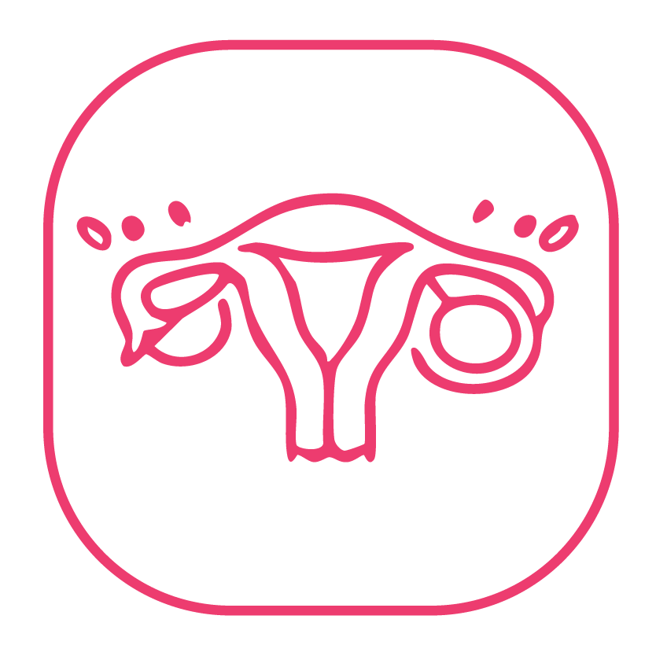
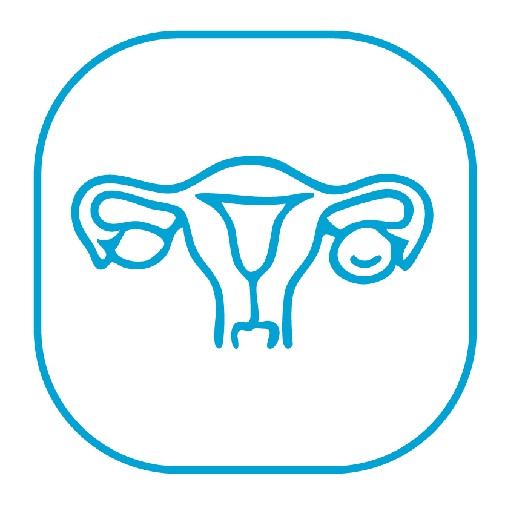
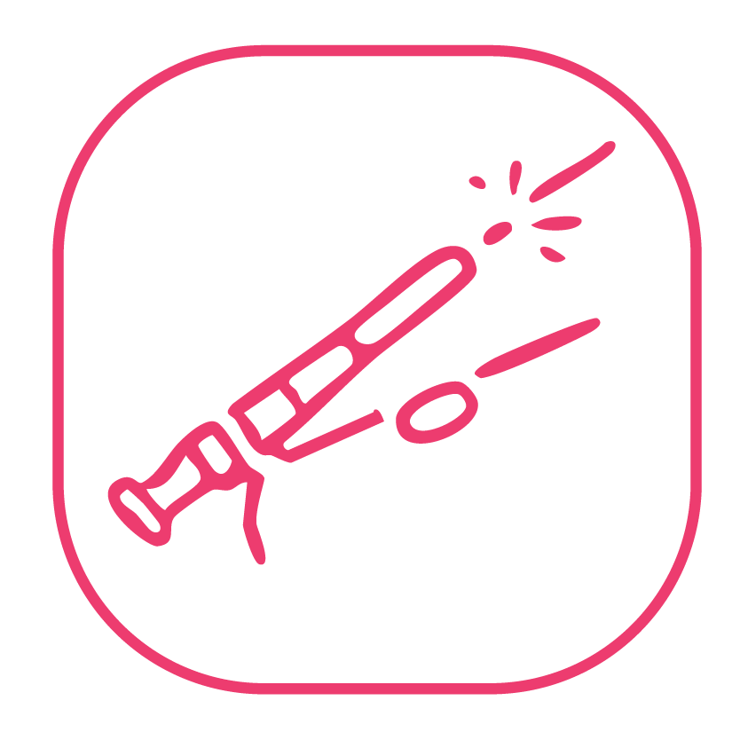
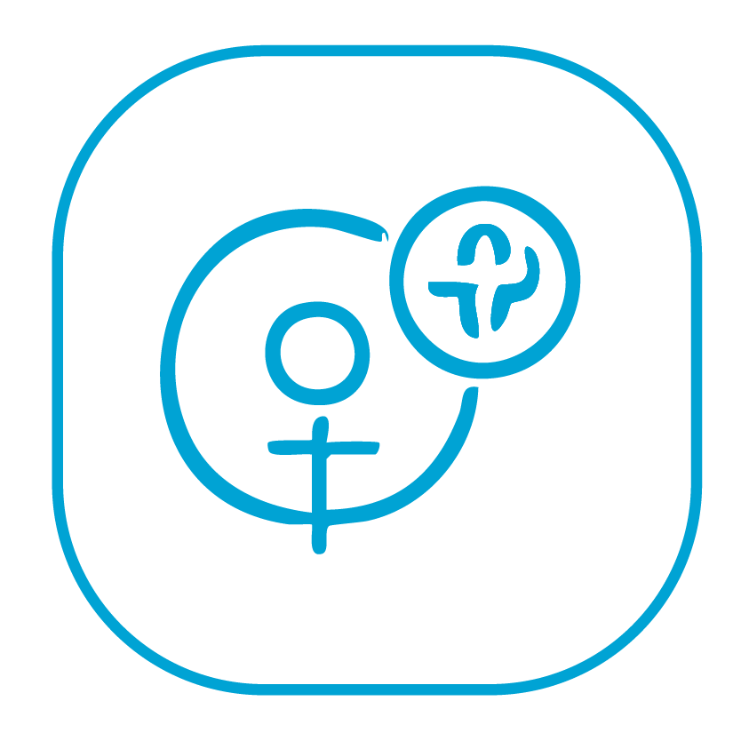

Fibroid Surgery
Advanced treatment for uterine fibroids causing pain, heavy bleeding, or fertility concerns.
Whether you're experiencing persistent pelvic pain, heavy bleeding, fibroids, ovarian cysts, or endometriosis, our experienced gynaecologists provide personalised care and advanced treatment options to help you find lasting relief. When surgery is needed, we offer advanced minimally invasive techniques for faster recovery and better outcomes.

Personalised Women's HealthcareRanked India’s No1. in Obst & Gynaec Care
For over 40 years, Surya Hospitals has been helping women navigate every phase of life—from adolescence and reproductive health to menopause and beyond.
Whether you're experiencing persistent symptoms, have been advised surgery, or simply want expert guidance, our team is here to help with compassionate, evidence-based care.
Expert Diagnosis. Advanced Treatment. Better Recovery.

Advanced treatment for uterine fibroids causing pain, heavy bleeding, or fertility concerns.

Safe diagnosis and minimally invasive treatment for ovarian cysts.

Comprehensive management to relieve chronic pain and improve quality of life.

Performed only when clinically indicated using modern surgical techniques focused on faster recovery.

Smaller incisions, reduced pain, shorter hospital stay, and quicker recovery.

Treatment for uterine conditions, menstrual disorders, prolapse, cervical abnormalities, and more.
If you're experiencing any of these symptoms, consult a gynaecologist.
Compassionate Care Meets Clinical Excellence
Dedicated team of experienced gynaecologists and surgeons.
Accurate diagnosis using modern imaging and investigations.
Whenever suitable, laparoscopic procedures help reduce recovery time.
Every woman receives an individualised care plan based on her symptoms and goals.
Equipped with advanced operation theatre and comprehensive support services.
Consultation → Diagnosis → Surgery → Recovery → Follow-up
For over four decades, Surya Hospitals has been one of Mumbai's trusted destinations for women's healthcare. Combining experienced specialists, advanced medical technology, and compassionate care, we provide comprehensive diagnosis and treatment for a wide range of gynaecological conditions.
Our goal is simple—to help every woman receive the right care at the right time, with dignity, comfort, and confidence.
If you experience persistent pelvic pain, irregular periods, abnormal bleeding, unusual discharge, or any ongoing gynaecological concern, it's important to seek medical evaluation.
Yes. Our specialists perform minimally invasive laparoscopic procedures whenever clinically appropriate.
No. Many gynaecological conditions can be managed with medication or conservative treatment. Surgery is recommended only when medically indicated.
Recovery depends on the type of procedure performed. Your doctor will guide you on expected recovery and follow-up care.
If available, bring your ultrasound, blood tests, or previous medical records to help our specialists assess your condition.